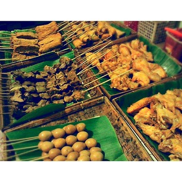

Angkringan memang sedang menjadi trend di salatiga tetapi angkringan yang satu ini sengaja diberikan nama yang berbeda karena menunya pun juga unik-unik. Sego mercon cocok untuk kalangan pelajar/mahasiswa.
